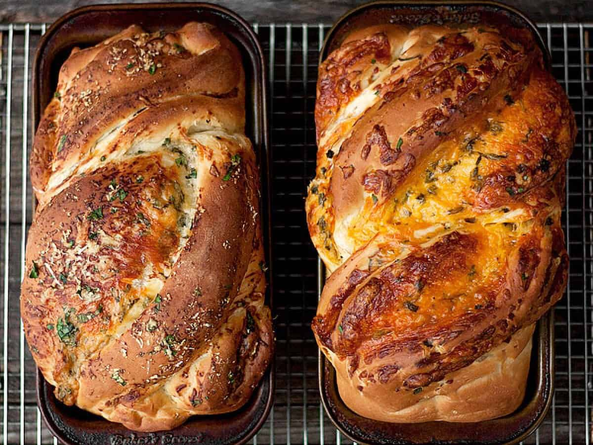

Homemade Cheese Bread

Perfect Homemade Cheese Bread
- 6 1/2 cups (794 g) unbleached bread flour, spooned and levelled (can use all purpose, flour *see Note 1 below)
- 2 teaspoons (14 g) fine salt , or a bit more, if using coarse kosher salt
- 5 Tablespoons (64 g) white sugar, or 5 Tbsp brown sugar or 3 1/2 Tbsp. honey or agave nectar
- 1 cup (227 g) lukewarm water, about 95F (for even softer bread, you can use 1 cup water leftover from boiling potatoes, cooled)
- 1 cup plus 2 Tablespoons (255 g) milk or buttermilk , lukewarm, about 95F
- 1 1/2 Tablespoons (14 g) Instant yeast, (can also use Active Dry yeast *see Note 2 below
- 1/4 cup (57 g) unsalted butter , melted, or the same amount of vegetable/canola oil
Cheddar and Herb (to make one loaf):
- 2 cups (340 g) shredded sharp cheddar cheese
- 1/4 cup (60 ml) minced fresh herbs, parsley and chives are good choices or a heaping tablespoon of dried herbs
Parmesan, Garlic and Herb (to make one loaf):
- 1 1/2 cups (375 ml) Parmesan cheese, freshly grated
- 1/2 teaspoon garlic powder, or about 2 tsp. minced fresh garlic
- 1/4 cup (60 ml) minced fresh herbs, parsley works well, or a heaping tablespoon of dried herbs
- 1/4 cup (57 g) butter, at room temperature
- In a mixing bowl or the bowl of a stand mixer, combine the flour, salt and sugar* together. (Tip: If measuring your flour in cups, without a scale, hold back 1 cup of the flour, to add as needed later, as needed). *If you're using honey or agave, add with the liquid ingredients instead.
- In a large measuring cup or bowl, combine the water and buttermilk and whisk in the yeast until dissolved. Add this mixture, along with the melted butter, to the dry ingredients. Mix by hand or with a dough hook, until the mixture is combined, about 2 minutes. Let the dough rest for 5 minutes.
- Continue mixing the dough, adding more flour in very small increments, as needed, until the dough becomes soft, smooth and tacky, but not sticky.
- Transfer the dough to a lightly floured surface and knead for a couple of minutes, adding more flour only if the dough is sticking to your hands or the work surface, then form dough into a ball. Place the dough in a lightly oiled bowl, cover with plastic wrap and either refrigerate for up to 4 days, or allow to sit at room temperature until doubled in size (about 60-90 minutes). (*Tip: I like to use an 8-cup glass measuring cup, so it's easy to see when it's doubled by the markings).
- Note: If you have refrigerated your dough, remove from the refrigerator 2 hours before you plan to bake, to allow it to come to room temperature.
- Grease two 8-inch by 4-inch loaf pans and set aside.
- Divide the dough into 2 equal pieces. Dust each with a bit of flour and then, using a rolling pin, roll into a rectangle approximately 10 inches wide and 16 inches long.
- **If you are unclear about the shaping process for this bread, scroll up to the Recipe Video above this Recipe Card. You may wish to watch before starting the shaping process**
- For the Cheddar and Herb Bread: spread the shredded cheddar and herbs evenly over the surface of the dough. Starting with the shortest side, roll the dough up jelly-roll style and pinch the seam together.
- For the Parmesan, Garlic and Herb: spread the softened butter over the surface of the dough. Sprinkle evenly with Parmesan, garlic and herbs. Press lightly with the palm of your hand to press the toppings into the butter. Starting with the shortest side, roll the dough up jelly-roll style and pinch the seam together.
- Shaping: Using a sharp knife, cut the roll of dough down the centre, lengthwise. Rotate each piece so that the cut sides are facing upward and place them side-by-side. Pinch together the farthest end. Keeping the cuts sides facing upwards as much as possible, place the right-side piece over the left-side piece. Straighen it up all up and then repeat, pinching together the end closest to you. If any cheese escapes, just place it back on top. Using a bench scraper or spatula, carefully lift the dough into the greased loaf pan. Repeat with the other dough log, then cover both with a greased piece of plastic wrap and allow to rise until the dough rises to about 1-inch above the side of the pans in the middle.
- Preheat oven to 350° F. (not fan assisted). Bake for 45-50 minutes total, but after 25 minutes of baking, rotate pans front-to-back in the oven and loosely cover with a piece of aluminum foil if necessary (if bread is already well-browned), to prevent the top from over-browning. Bread should reach about 185° internal temperature in the centre.
- Remove the bread from the oven and allow to cool in the pans for a couple of minutes. Run a sharp knife around the edge of the bread and carefully remove the loaves to a cooling rack. Allow the loaves to cool for 1 hour before slicing. *Slicing hot or very warm bread will make for a gummy crumb, so resist the urge and let it cool :)
NOTES:
High protein bread flour is recommended for best texture and lightness. If you only have all purpose flour on hand, you can use it, but your bread may be a bit less light. If using all purpose flour, you may find you have to use a bit more flour to get to that moist, smooth dough stage.
If you only have Active Dry yeast, you can use it, but you will need to proof it in the lukewarm water first (add a pinch of sugar). Allow to stand 5 minutes, then add it to the dough when the water is specified.
Be sure to read the Ingredient and Cook's Notes above this Recipe Card, for more tips, options, substitutions and variations for this recipe! You'll also find My Best Tips for Baking with Yeast and a video of the shaping of this cheese bread, too.